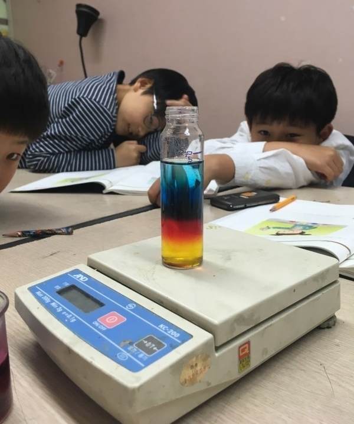
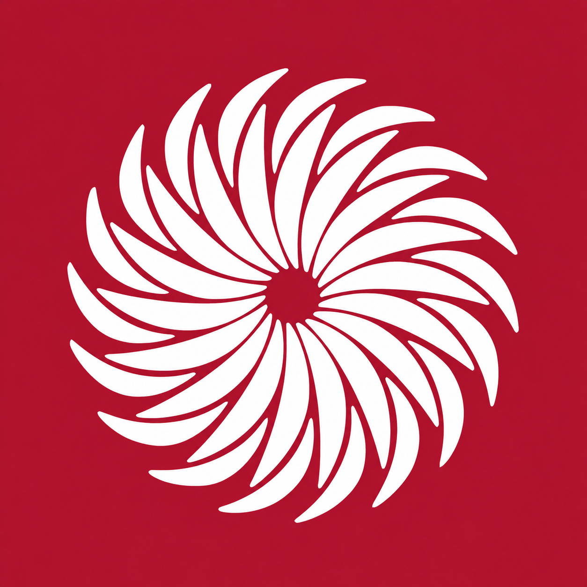
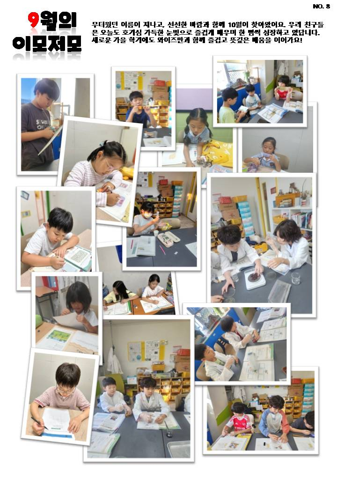
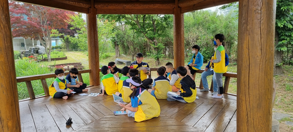
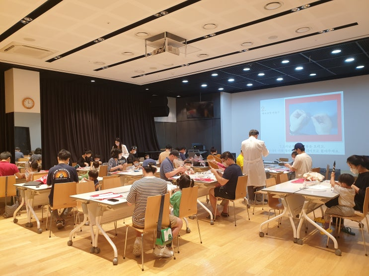

실험과학 · 2020.02 기록액체로 탑을 쌓을 수 있을까요?
서로 다른 액체를 비교하고, 소금의 양을 달리하며 층이 만들어지는 모습을 관찰했어요.
수업 기록 읽기 ↗
와이즈만 수학·과학 창의사고력 학습이
최상위권의 결과를 만듭니다.

*2016~2025학년도 영재교육원 합격자 수 기준

답을 아는 것에서 한 걸음 더.
어떻게 알게 되었는지 설명하고, 새로운 문제에 적용하는 경험을 함께합니다.
학년별 개설 과정과 수업 시간은 상담 시 확인하실 수 있어요.

실험과학 · 2020.02 기록서로 다른 액체를 비교하고, 소금의 양을 달리하며 층이 만들어지는 모습을 관찰했어요.
수업 기록 읽기 ↗
생태체험 · 2022.05 기록교실에서 생긴 궁금증을 자연으로 가져갔어요. 생물의 모습과 살아가는 환경을 함께 살펴보는 시간입니다.
체험 기록 읽기 ↗
가족 과학활동 · 2021.07 기록원리를 알아보고, 힘을 모아 만들고, 직접 날려보았어요. 가족과 함께하는 특별한 과학 경험입니다.
활동 기록 읽기 ↗위 이야기는 블로그에 남아 있는 과거 활동 사례입니다. 현재 진행하는 특강과 모집 일정은 센터에 문의해 주세요.
수업에서 기억에 남는 순간을 들려주세요. 익명이나 가명으로 작성할 수 있어요.
아이들이 만날 장소와 활동을 먼저 살펴보고,
선생님들이 함께 수업의 흐름을 고민합니다.
관찰할 대상과 탐구할 주제를 정하고, 아이들이 직접 해볼 수 있는 활동을 준비합니다.
블로그의 검단산 사전답사 기록에는 장소를 방문해 활동 공간과 위험 요소를 확인하는 과정이 담겨 있어요.
사전답사 후 선생님들이 활동 내용을 논의하고, 보완할 부분을 점검하며 수업을 준비한 기록을 확인할 수 있어요.
관찰한 변화를 사진과 글로 남기고, 친구들과 아이디어를 나누며 결과물을 발표합니다. 탐구의 과정이 기록과 설명으로 이어지는 배움을 지향해요.
2025년 ‘올챙이부터 개구리까지’ 관찰보고서 대회는 성장 과정을 꾸준히 기록하는 활동을 안내했어요. 2026년 10월 소식지에는 팀 구성부터 설계·발표까지 이어지는 후츠파 융합 프로젝트가 소개되어 있습니다.
관찰보고서 활동 안내 읽기 ↗최근 소식지와 학습 이야기로
하남센터의 교육을 더 자세히 만나보세요.
창의력 글쓰기 대회, HME 학력평가, 영재원 대비 특별반 등 소식지에 실린 안내를 확인해 보세요.
정답뿐 아니라 개념 이해와 풀이 과정을 살펴보는 방법, 진단 상담을 소개합니다.
흥미로운 탐구와 기본기 학습의 균형, 사고력과 수학 문해력을 연결하는 교육 이야기입니다.
제공된 PDF에 수록된 게시글을 연결했습니다. 모집 여부와 일정 변경 사항은 센터에 확인해 주세요.
아이에게 맞는 시작을 함께 찾아요.
관찰과 실험을 통해 현상을 알아보고 자신의 생각을 이야기하는 수업을 소개하고 있어요. 블로그에는 액체탑 실험, 부피 측정, 모터를 이용한 자동차 제작 등 실제 활동이 기록되어 있습니다. 학년별 현재 수업 내용은 상담으로 안내받으실 수 있어요.
최근 블로그에서는 재미있는 탐구 활동과 체계적인 학습을 함께 강조하고 있어요. 다양한 풀이를 생각하고 설명하는 사고력, 문제의 뜻을 정확히 읽는 수학 문해력을 연결합니다. 아이의 현재 학습 상태를 살펴보는 진단 상담도 문의하실 수 있어요.
네, 관심 분야와 현재 학습 경험을 함께 말씀해 주세요. 과학과 수학의 개설 과정 및 시간표를 확인하며 수강 방향을 상담하실 수 있어요.
소개된 체험은 과거 진행 사례예요. 현재 모집 여부, 참여 대상, 장소와 비용은 특강별로 달라질 수 있으니 센터에 문의해 주세요.
희망 수업 요일과 등하원 지역을 알려주시면 현재 시간표와 셔틀 이용 가능 여부를 확인하실 수 있어요. 노선·운행 시간·비용은 상담 시 안내받아 주세요.
학년, 관심 분야, 희망 수업 요일을 알려주세요.
아이에게 맞는 수업을 알아보는 데 도움이 됩니다.
궁금한 수업과 현재 개설 과정을 문의해 주세요.
경기도 하남시 덕풍동로 111-21, 6층
제공된 2025년 수학 안내글과 2026년 소식지의 센터 정보 기준입니다.
방문 전 센터에 현재 안내를 확인해 주세요.